British Columbia fieldwork 2010
Shaluli Shan fieldwork 2009
Haizi Shan fieldwork 2008
Bayan Har fieldwork 2007 --- MMS photos from the 2007 fieldwork
Bayan Har fieldwork 2006
Photos from the Haizi Shan fieldwork September-October 2008
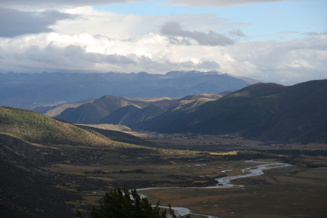
Daocheng Valley southwest of the Haizi Shan plateau - view towards the southeast
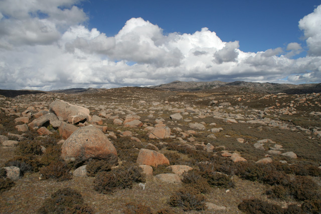
Granite boulders on the Haizi Shan plateau
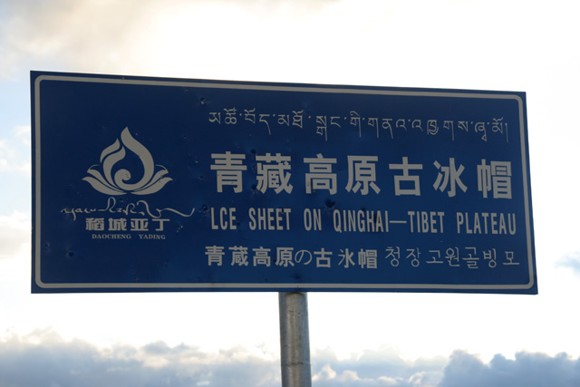
Lonesome road sign on the Haizi Shan plateau
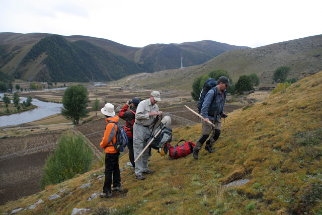
Walking up a ridge-like hill (possibly a moraine ridge) east of the prominent Kuzhaori moraine ridge (which can be seen in the background)
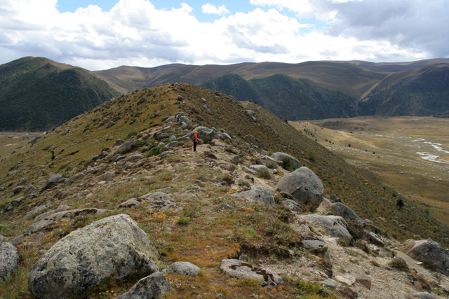
Looking down the sharp and massive Kuzhaori moraine ridge from the upper part of the eastern ridge
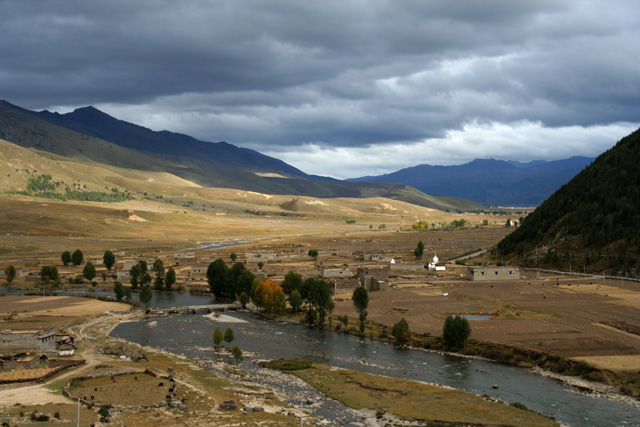
Kuzhaori village seen from the lower part of the Kuzhaori moraine ridge
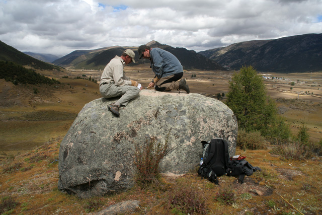
Jon and Arjen collecting a sample for cosmogenic exposure dating from a glacial boulder in the Daocheng Valley
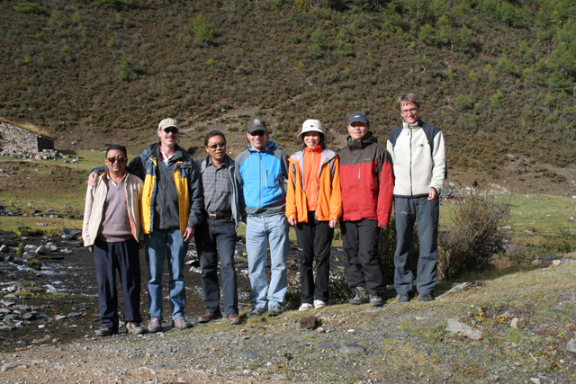
Zhou Shifu, Jon Harbor, Guo Shifu, Arjen Stroeven, Fu Ping, Hu Bin, Jakob Heyman - the Haizi Shan fieldwork 2008 group
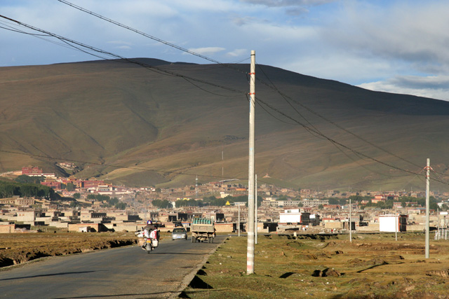
Litang - north of the Haizi Shan plateau
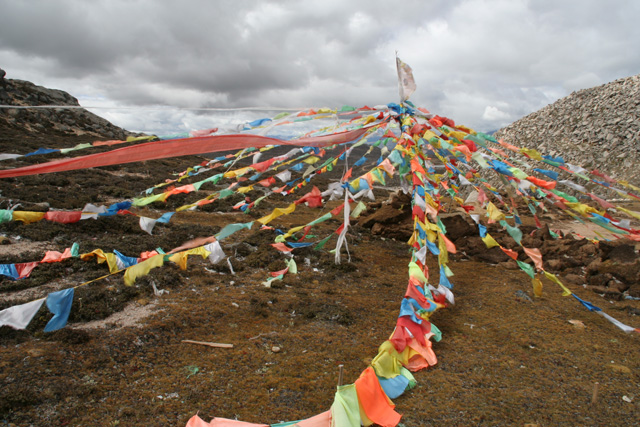
Prayer flags at a road pass in northern Haizi Shan, c. 4800 m a.s.l.
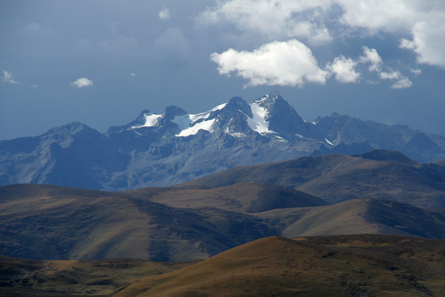
The Genyen mountains seen from northern Haizi Shan
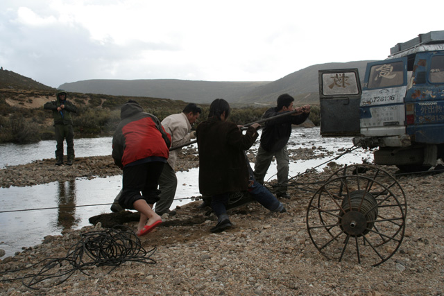
Winching a car out of a stream on the western Haizi Shan plateau
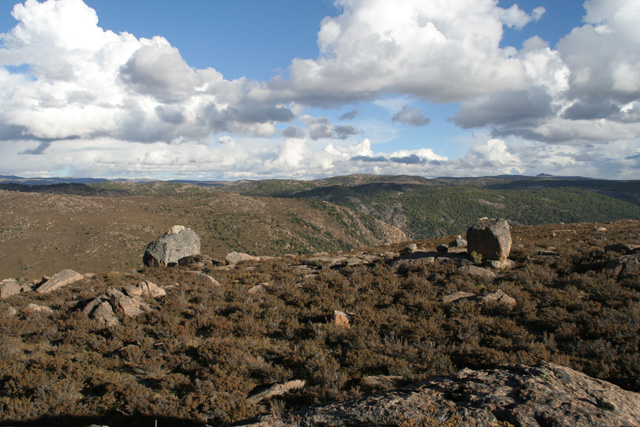
Perched boulders on the western Haizi Shan plateau